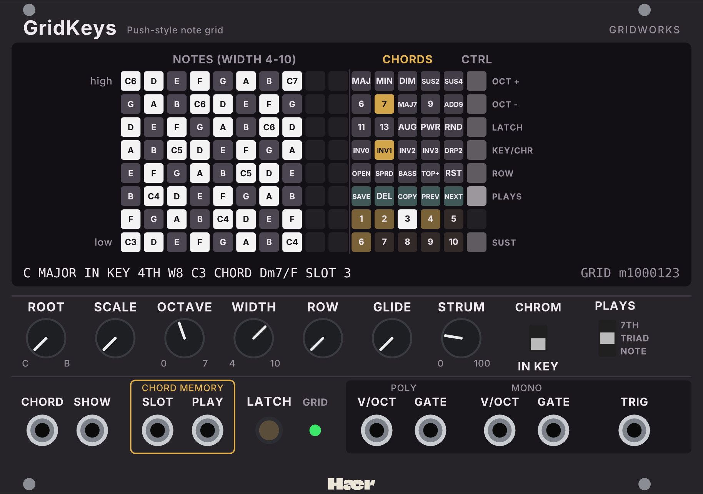

The grid becomes a keyboard. The bottom-left key is the root note in the starting octave. Notes rise one step per key to the right, and each row starts a little higher than the row below (a 4th by default, just like Ableton Push).
Because a row is wider than that jump, rows overlap, so the same note appears in several places. Every copy lights up when you play it, and you can reach a chord or a melody from whichever spot is closest.
| ROOT, SCALE | Root note C–B and one of Push's 26 scales (Major, Minor, Dorian … Spanish, Chromatic). The knob's tooltip shows the name. Root keys glow gold. |
| OCTAVE | The octave of the bottom-left key (0–7, default 3, so C3). The grid's OCT +/− keys shift this up or down on top. |
| WIDTH | How many columns are notes, from 4 to 16 (default 8). Narrow rows mean more repeats of each note and smaller hand shapes. At 16 the control column is gone and the whole grid is notes. |
| ROW | How much higher each row starts: 4th (Push default), 3rd, 5th, octave, or sequential (each row carries on where the row below ends, so no repeats). If the jump would be wider than the row, it's limited to the width so no notes get skipped; the status line then shows "=W". |
| IN KEY / CHROM | In Key: only scale notes, so you can't play a wrong note. Chrom: all 12 notes, with scale notes lit and the others dark (menu: dim instead of dark). |
| PLAYS | Note: one key, one note. Triad / 7th: each key plays a chord built from the scale on that note (in C major, D gives D F A, or D F A C). In Chromatic mode, keys outside the scale still play a single note. |
| STRUM | The gap between the notes of a chord key, 0–100 ms, from the bottom note up. 0 = all at once. |
| GLIDE | Portamento on the mono output only (0–1 s). |
| LATCH | Notes keep playing after you let go. The next key or chord you press replaces them. Turning latch off stops them. |
| CHORD in | Patch a poly V/OCT (from The Changes, a chord module or another keyboard). Its notes become the scale, with the lowest note as the root. The grid then only offers chord tones, and SCALE and ROOT are ignored while it's patched. The status line shows the chord. |
| SHOW in | Patch a poly V/OCT from a sequencer and its notes light up on the grid in teal (bright on the hardware), so you can follow along or play against it. |
| Outputs | POLY V/OCT/GATE: one channel per voice (8 by default, menu 1–16). The oldest note is replaced when you run out. MONO V/OCT/GATE: newest held note. Letting go falls back to the one you're still holding. TRIG: a short trigger for every new note, including each strummed one. |
With WIDTH below 16, column 16 holds the controls. Columns between the note area and column 16 are unused and stay dark.
| Column 16, row | Key |
|---|---|
| 1 · 2 | OCT + / OCT −: shift the whole keyboard an octave. The key gets brighter the further you've shifted. |
| 3 | LATCH on/off (the same as the panel button). |
| 4 | KEY/CHR: switch between In Key and Chromatic. |
| 5 | ROW: step through 4th → 3rd → 5th → octave → sequential. |
| 6 | PLAYS: step through note → triad → 7th. |
| 8 | SUSTAIN, held like a pedal: notes you release keep sounding until you let go of this key. |
Lights: bright = sounding (every copy of the note), gold on screen = root, dim = scale note, teal on screen = SHOW input. The panel's grid shows the note names and works with the mouse. Hold the button down to hold a note.
All settings, the octave shift, menu choices and the chosen grid are saved with the patch. Made for 16×8 grids such as the grid 128.